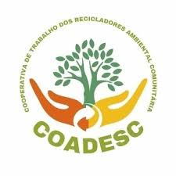

O Núcleo de Soluções para Resíduos Urbanos
O Núcleo de Soluções para Resíduos Urbanos nasceu a partir de uma constatação simples e urgente: em situações de crise climática, os resíduos urbanos deixam de ser apenas uma questão operacional e passam a impactar diretamente a saúde, a organização dos territórios e a capacidade de resposta das comunidades.
As enchentes no Rio Grande do Sul tornaram isso ainda mais evidente. Faltavam informação acessível, coordenação territorial, espaços de referência e apoio técnico contínuo. Ao mesmo tempo, cooperativas, catadores e lideranças comunitárias estavam na linha de frente.
Foi nesse contexto que o NSRU começou a ser construído, conectando organizações com atuação em gestão de resíduos, mobilização social e economia circular.



Uma base para ação territorial
O NSRU foi pensado para ser útil na prática: apoiar cooperativas, orientar territórios, conectar pessoas e transformar dados em apoio real para a tomada de decisão.
O Núcleo se consolida como uma ferramenta de fortalecimento territorial, promovendo reciclagem, justiça climática e respostas coletivas mais consistentes.